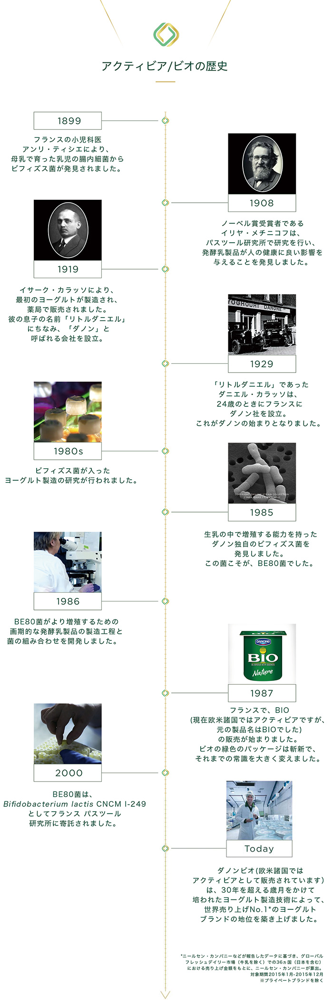

アクティビア/ビオの歴史

- 1899年
- フランスの小児科医アンリ・ティシエにより、母乳で育った乳児の腸内細菌からビフィズス菌が発見されました。
- 1908年
- ノーベル賞受賞者であるイリヤ・メチニコフは、パスツール研究所で研究を行い、発酵乳製品が人の健康に良い影響を与えることを発見しました。
- 1919年
- イサーク・カラッソにより、最初のヨーグルトが製造され、薬局で販売されました。彼の息子の名前「リトルダニエル」にちなみ、「ダノン」と呼ばれる会社を設立。
- 1929年
- 「リトルダニエル」であったダニエル・カラッソは、24歳のときにフランスにダノン社を設立。これがダノンの始まりとなりました。
- 1980年代
- ビフィズス菌が入ったヨーグルト製造の研究が行われました。
- 1985年
- 生乳の中で増殖する能力を持ったダノン独自のビフィズス菌を発見しました。この菌こそが、BE80菌でした。
- 1986年
- BE80菌がより増殖するための画期的な発酵乳製品の製造工程と菌の組み合わせを開発しました。
- 1987年
- フランスで、BIO(現在欧米諸国ではアクティビアですが、元の製品名はBIOでした)の販売が始まりました。ビオの緑色のパッケージは斬新で、それまでの常識を大きく変えました。
- 2000年
- BE80菌は、Bifidobacterium lactis CNCM I-249としてフランス パスツール研究所に寄託されました。
- 今日
- ダノンビオ(欧米諸国ではアクティビアとして販売されています）は、30年を超える歳月をかけて培われたヨーグルト製造技術によって、世界売り上げNo.1*のヨーグルトブランドの地位を築き上げました。
＊ニールセン・カンパニー、IRI、インテージの報告データに基づき、グローバルフレッシュデイリー市場（牛乳を除く）での36ヵ国（日本を含む）における売り上げ金額をもとに算出。対象期間2016年1月-2016年12月（プライベートブランドを除く）